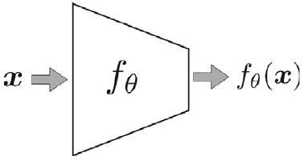

Introduction：模型是地圖，不是實地
▼地圖不是實地：模型是世界的「替代品」
當我們想理解周遭世界時，免不了會動手建模型。但沒有一個模型就是世界本身——它們都只是「替代品」（surrogate），只是有些比較好用、有些比較難用。在科學裡，我們常常無法確定模型到底符不符合真實，唯一能可靠檢驗的標準是：這個模型有沒有用。一個模型算「有用」，要滿足兩件事：
- (a) 它能好好解釋目前的觀測；
- (b) 它能準確預測未來的觀測。
這個原則正是實證科學與機器學習的共同核心。
Karl Popper 曾強調：科學探究不是從「純觀察」開始，而是從「猜想」（conjecture）開始——先對世界怎麼運作提出假設，再用觀測去檢驗它，透過不斷修正與否證，慢慢增進我們對世界的理解 [178]。機器學習幾乎完全呼應這套哲學：我們先提出一個建模假設，再用資料去檢驗、修正它。
機器學習的三步：假設、評分、搜尋
機器學習的演算法五花八門，但所有方法都共享同一個骨架。我們先對「資料可能長什麼樣」做一個假設（呼應 Popper 的猜想精神），再用資料去修正它。整個過程包含三個核心步驟：
- 假設類別（Hypothesis Class，猜想）：先定義一個假設類別，代表我們對資料的建模假設。例如選線性模型，就等於假設輸入與輸出之間是線性關係；樹狀模型則假設資料可以依特徵切分、層層分割；神經網路則假設底層關係是「組合式／分層式」的，能透過學到的特徵階層捕捉複雜模式。這個假設類別，就是我們對資料底層結構的初始猜想。
- 評分機制（Loss Function，損失函數）：有了假設類別後，我們需要比較裡面的成員——也就是判斷哪個模型比較好。做法是用一個評分機制，替每個模型算一個數值（常叫「損失」），量化它在資料上的表現。常見的損失函數包括均方誤差（MSE，量測預測值與真實值之間的平均平方差）與交叉熵損失（常用於分類任務）。這一步讓我們能依「模型多貼合資料」來排名。
- 搜尋策略（Optimization，最佳化）：最後，我們要依評分機制挑出最好的模型——也就是損失最低的那一個。這靠最佳化方法完成，方法會隨假設類別與損失函數的結構而不同。如果最佳化問題是凸的，可能有高效率的解析或數值方法找到全域最佳解；如果問題非凸（神經網路常如此），通常用梯度下降這類迭代技巧搜尋好解，但可能只找到局部最小值。所以最佳化方法的選擇，關鍵取決於問題本質與損失地形的性質。
把整個機器學習流程濃縮成一句話：
- 選一個假設類別，記作 $\mathcal{F}$。
- 定義評分機制，記作 $S(f)$，其中 $f \in \mathcal{F}$，分數越低代表模型越好；多數情況下 $S(f)$ 就是損失函數。
- 解最佳化問題，找出最好的模型：
$$ \widehat{f}:=\arg \min _{f \in \mathcal{F}} S(f) . \tag{1} $$
沒有免費午餐：沒有假設就沒有學習
這個流程點出了機器學習裡的「沒有免費午餐定理」（No Free Lunch Theorem）[249]：沒有任何學習演算法能在「所有可能問題」上都表現良好，除非它先做了假設。換句話說，沒有假設，就沒有學習。我們選定一個假設類別，其實就是對「解長什麼樣」施加了一種偏見——這叫做模型的歸納偏置（inductive bias）。評分機制與最佳化策略，則定義了我們如何在這個假設類別裡評估與搜尋。這些選擇——包括損失函數、最佳化地形、停止條件——共同塑造了模型如何從已觀測資料推廣到未見過的新情境，是學習過程的根本一環。
訓練誤差與測試誤差
就像科學的目標是建出既能解釋又能預測世界的模型，機器學習的目標也一樣。一個模型算「有用」，要滿足：
- (a) 它能把目前的資料解釋得好——對應到低的訓練誤差（training error）；
- (b) 它能有效預測未來或未見過的資料——對應到低的測試誤差（test error）。
所以機器學習裡「有用的模型」這個概念，正是科學「建構既能描述當前現象、又能預期未來現象的模型」原則的直接延伸。這兩者之間的平衡——貼合已知資料（fit）與推廣到新資料（generalization）——決定了模型最終的實用價值。
🤖 AI 生圖可用：重繪此示意圖的提示詞（結構化）
WHAT（骨架）: 一個四節點循環示意圖，展示監督式學習的核心流程：假設空間 F（候選函數集合）→ 用評分函數 S(f)/Loss 排序 → 搜尋 argmin 挑出最佳 f* → 泛化到新資料，再回到假設空間。中央放置「歸納偏置」漩渦，一條對角虛線標示 No Free Lunch 定理。 WHY（因果或反直覺）: 因果鏈是「假設空間越大 → 排序越難 → 需要歸納偏置來收窄搜尋」。反直覺點：沒有免費午餐——沒有一個演算法在所有問題上都最好，必須靠先驗（歸納偏置）取捨；漩渦象徵偏置把搜尋「吸」向特定方向，既是限制也是效率來源。 MUST show（必備要素）: ① 假設空間 F 用雲朵/多條候選曲線表示；② 評分 S(f)/Loss 用長短不一的排序條表示「越小越好」；③ 搜尋 argmin 用漏斗收斂到一個點；④ 泛化用靶心表示「對新資料有效」；⑤ 中央歸納偏置漩渦（螺旋）；⑥ 對角虛線 No Free Lunch 標籤；⑦ 四段循環箭頭標註「排序/搜尋/泛化/回到 F」。 AVOID（禁止）: 不要畫成純方框互連；不要出現任何數學公式或 LaTeX 反斜線；不要用真實函數曲線或座標軸；不要讓漩渦遮住箭頭與節點文字。 STYLE: flat vector, scientific, white background, 藍綠紫黃四色調（藍=假設、黃=評分、綠=搜尋、紫=泛化、紅=偏置、灰=No Free Lunch），圓角、粗箭頭、無陰影、無漸層。
機器學習流程中，三個核心步驟的正確順序是？
式(1) 中的 $\widehat{f}$ 代表什麼？
「沒有免費午餐定理」告訴我們什麼？
一個模型算「有用」的兩個條件是？
Machine Learning Model：把世界變成向量
▼資料集：把世界變成向量
在機器學習裡，假設類別中的每個模型都定義了一個「從輸入到輸出的函數（映射）」，並由可學習的參數來參數化。學習，就是用選定的損失函數與搜尋策略，找出能對給定輸入產生期望輸出的最佳參數值。
先看資料怎麼表示。假設我們量測了某個量——這個量可以是任何資料或訊號，例如個人健康資料（血壓、血糖）、多張圖片，或像天氣溫度、股價那樣的時間序列。在機器學習中，資料通常表示成向量：如果一個物件可以用 $d$ 個特徵來描述，那它就能表示成 $d$ 維空間裡的一個向量。令資料向量所在的空間維度為 $d$，也就是說每個量都是 $d$ 維歐氏空間 $\mathbb{R}^{d}$ 裡的一個 $d$ 維向量。這 $d$ 個值就叫做這個量的特徵（features）。這組 $d$ 維資料點合起來，就叫做資料集（dataset）。一組圖片、或幾個人的健康資料，都是資料集的例子。
學習模型：從資料空間到輸出空間
考慮一個有 $n$ 個資料點的資料集 $\left\{\boldsymbol{x}_{i} \in \mathbb{R}^{d}\right\}_{i=1}^{n}$，其中每個點都是歐氏空間 $\mathbb{R}^{d}$ 裡的 $d$ 維向量。這些向量可以按「行」排成一個矩陣 $\boldsymbol{X} \in \mathbb{R}^{d \times n}$。
學習模型 $f$ 是一個從資料空間到輸出空間的函數（映射）：
$$ \begin{align*} & f_{\theta}: \mathbb{R}^{d} \rightarrow \mathbb{R}^{p}, \tag{2}\\ & \boldsymbol{x} \mapsto f_{\theta}(\boldsymbol{x}), \end{align*} $$
其中 $\theta$ 代表函數 $f$ 的參數，這些參數是從資料中學來的。通常（但不一定）$p \leq d$。下圖（Fig. 1）示意了學習模型的概念。
機器學習演算法會搜尋能讓輸出符合期望任務的參數值 $\theta$。這些「期望輸出」的性質取決於具體任務：例如在分類任務中，期望輸出就是每個輸入資料實例的正確類別標籤。

🤖 AI 生圖可用：重繪此示意圖的提示詞（結構化）
WHAT（骨架）: 一條水平管線示意圖，展示資料集如何被組織成矩陣並餵給模型：左側是 n 個 d 維樣本向量 x₁…xₙ（每個樣本一根垂直柱，柱內 d 格代表特徵）→ 中間是資料矩陣 X ∈ R^(d×n)（d 列 × n 欄的格子）→ 右側是模型 fθ（含參數 θ）→ 最右是輸出 y。 WHY（因果或反直覺）: 因果是「把分散的樣本向量併成一個矩陣，才能一次餵給模型做批次運算」。反直覺點：d（特徵/列）、n（樣本/欄）、p（參數）三個符號常被混淆——用「列=特徵、欄=樣本」的格子與「參數個數」的獨立標籤把三者釘清楚。 MUST show（必備要素）: ① 至少三根垂直樣本柱 x₁、x₂、x₃ 與省略號 xₙ，柱內有 d 格；② 標註「R^d」與「每個樣本有 d 個特徵」；③ 中間 d×n 矩陣格子，明確標 d（列/特徵）與 n（欄/樣本）；④ 模型方框 fθ 標 θ；⑤ 輸出 y；⑥ 獨立標籤 p = 參數個數；⑦ 三段粗箭頭串起管線；⑧ 底部一行總結 d/n/p 定義。 AVOID（禁止）: 不要畫成純方框互連；不要出現任何數學公式或 LaTeX 反斜線；不要用真實數值填格子；不要漏掉 d/n/p 任一標籤；不要讓箭頭與格子重疊。 STYLE: flat vector, scientific, white background, 藍（向量）→黃（矩陣）→綠（模型）→紫（輸出）漸進色調，紅標 p，圓角、粗箭頭、無陰影、無漸層。
一個物件用 $d$ 個特徵描述，可表示成哪個空間裡的向量？
資料矩陣 $\boldsymbol{X}$ 的維度是？
式(2) 中 $f_{\theta}: \mathbb{R}^{d} \rightarrow \mathbb{R}^{p}$ 的 $\theta$ 代表什麼？
式(2) 中，$p$ 與 $d$ 的關係通常是？
Supervised Learning：用有標籤的資料學習
▼監督式學習：用「有標籤」的資料學習
機器學習的任務大致分成監督式、非監督式與強化學習三大類。監督式學習包含分類與回歸，演算法從「有標籤」的資料學習，以便對新的、沒見過的輸入做預測。
分類：教小孩分蘋果與黃瓜
假設你想教一個小孩分辨蘋果和黃瓜。你可以各收集 5 個例子，一個一個拿給小孩看，並說「這是蘋果」或「這是黃瓜」。透過這些有標籤的例子，小孩慢慢學會依特徵來認出蘋果和黃瓜。
這個情境正是機器學習裡分類（classification）的基本任務：把每個資料實例分派到幾個預先定義好的類別之一。
技術定義：考慮一個有 $n$ 個資料點的資料集 $\left\{\left(\boldsymbol{x}_{i}, y_{i}\right)\right\}_{i=1}^{n}$，其中 $\boldsymbol{x}_{i} \in \mathbb{R}^{d}$ 是輸入向量，$y_{i}$ 是對應的標籤。標籤 $y_{i}$ 取值於一個有限的類別標籤集合 $\left\{\ell_{1}, \ell_{2}, \ldots, \ell_{m}\right\}$。分類的任務是學一個函數 $f_{\theta}$，使得對新的輸入 $\boldsymbol{x}$，模型預測出標籤 $y=f_{\theta}(\boldsymbol{x})$：
$$ f_{\theta}: \mathbb{R}^{d} \rightarrow\left\{\ell_{1}, \ell_{2}, \ldots, \ell_{m}\right\} . \tag{3} $$
分類的機器學習演算法，目標就是找出能讓輸出盡量貼合期望標籤的參數值 $\theta$。
回歸：教小孩估蘋果直徑
回歸（regression）是另一個基本任務，目標是依輸入特徵預測一個連續值。
假設你想教小孩估計蘋果的直徑。你可以收集 5 顆蘋果、量好它們的直徑，再拿給小孩看並對應它們的大小。有了這些有標籤的例子，小孩學會把蘋果的視覺特徵（顏色、質地、形狀）跟它的直徑連結起來。
技術定義：考慮一個有 $n$ 個資料點的資料集 $\left\{\left(\boldsymbol{x}_{i}, y_{i}\right)\right\}_{i=1}^{n}$，其中 $\boldsymbol{x}_{i} \in \mathbb{R}^{d}$ 是輸入向量，$y_{i}$ 是對應的標籤。跟分類不同——分類的 $y_{i}$ 取值於有限集合——回歸的 $y_{i}$ 取值於 $\mathbb{R}$。回歸的任務是學一個函數 $f_{\theta}$，使得對新的輸入 $\boldsymbol{x}$，模型預測出一個實數輸出 $y=f_{\theta}(\boldsymbol{x})$：
$$ f_{\theta}: \mathbb{R}^{d} \rightarrow \mathbb{R} . \tag{4} $$
回歸的機器學習演算法，目標是找出能讓輸出盡量接近真實值的參數值 $\theta$，以便對新的、沒見過的資料做預測。這讓模型能推廣到訓練時沒看過的輸入。
離散標籤 vs 連續值
分類與回歸最大的差別，就在輸出的「型態」：
- 分類：輸出是離散的類別標籤（例如「蘋果」或「黃瓜」），來自有限集合 $\left\{\ell_{1}, \ldots, \ell_{m}\right\}$。
- 回歸：輸出是連續的實數值（例如直徑 7.2 公分），來自 $\mathbb{R}$。
🤖 AI 生圖可用：重繪此示意圖的提示詞（結構化）
WHAT（骨架）: 左右分鏡對比圖，中間以虛線分隔。左半是「分類」：一顆蘋果 → 向下箭頭 → 離散標籤 {l₁, l₂, l₃} 三個獨立格子。右半是「回歸」：一顆標了直徑線的蘋果 → 向下箭頭 → 連續實數軸 R，軸上標一個數值點（如 7.3 cm）。
WHY（因果或反直覺）: 用同一個輸入（蘋果）對照兩種輸出，凸顯「任務決定輸出空間」的因果：分類要回答「是哪一類」（有限可數），回歸要回答「是多少」（無限連續）。反直覺點：分類的輸出是離散格子、彼此無大小順序；回歸的輸出是連續軸、有大小與距離。
MUST show（必備要素）: ① 左半標題「分類 Classification」、右半標題「回歸 Regression」；② 兩邊各一顆蘋果（分類用紅蘋果、回歸用綠蘋果並畫直徑線）；③ 左半離散標籤 {l₁, l₂, l₃} 三個格子；④ 右半連續實數軸 R 帶刻度與一個數值點；⑤ 兩邊各一段向下箭頭；⑥ 底部各一行結論「輸出是哪一類 / 輸出是一個數值」；⑦ 中間虛線分隔。
AVOID（禁止）: 不要畫成純方框互連；不要出現任何數學公式或 LaTeX 反斜線；不要讓左右兩半內容混在一起；不要用真實照片，用向量圖示即可；不要漏掉「離散 vs 連續」的對比。
STYLE: flat vector, scientific, white background, 左半藍色調（分類）、右半綠色調（回歸），圓角、粗箭頭、無陰影、無漸層。分類任務的標籤 $y_{i}$ 取值於？
回歸任務的標籤 $y_{i}$ 取值於？
式(3) 分類的映射是 $f_{\theta}: \mathbb{R}^{d} \rightarrow$ 什麼？
教小孩「分辨蘋果或黃瓜」對應哪種任務？
Unsupervised Learning：從無標籤資料找結構
▼非監督式學習：從「無標籤」資料找結構
非監督式學習包含分群與降維，目標是在沒有標籤的資料中找出模式或結構。
分群：不告訴名字，自己分組
分群（clustering）的基本任務，是依相似度把資料點分組，完全不用任何標籤。
假設你想教小孩分辨蘋果和黃瓜，但不告訴他們名字。你可以收集 5 顆蘋果和 5 條黃瓜，打亂後請小孩依外觀把它們分成兩組。小孩可能發現蘋果偏圓、黃瓜偏長，於是自然地把它們分開。這個分組完全只靠物件的模式，沒有任何先驗標籤資訊。
技術定義：考慮資料 $\left\{\boldsymbol{x}_{i}\right\}_{i=1}^{n}$，其中 $\boldsymbol{x}_{i} \in \mathbb{R}^{d}$。分群的任務是學一個函數 $f_{\theta}$，使得當我們看到新的輸入 $\boldsymbol{x}$ 時，能把它分派到其中一個群：
$$ f_{\theta}(\boldsymbol{x}) \in\left\{\ell_{1}, \ell_{2}, \ldots, \ell_{m}\right\} . \tag{5} $$
數學上，模型可寫成
$$ f_{\theta}: \mathbb{R}^{d} \rightarrow\left\{\ell_{1}, \ell_{2}, \ldots, \ell_{m}\right\} . \tag{6} $$
這個形式跟分類很像——模型都把每個輸入映射到有限輸出集合之一。但差別在於：分類有帶標籤的資料 $\left\{\left(\boldsymbol{x}_{i}, y_{i}\right)\right\}_{i=1}^{n}$ 可以訓練，而分群只有輸入資料 $\left\{\boldsymbol{x}_{i}\right\}_{i=1}^{n}$、完全沒有標籤。所以分群的學習過程，完全依賴在輸入資料中發現模式與結構。
分群的模糊性
分群凸顯了這個任務天生的模糊性：一個群常常可以再細分，或跟別的群合併，端看你要多細的粒度。為了處理這種模糊性，分群演算法通常要嘛事先指定群的數量，要嘛用超參數來決定分群結構。
降維：把高維資料壓到低維
降維（dimensionality reduction）的基本任務，是把高維資料映射到較低維的空間，同時保留重要的結構或模式。
想像教小孩理解水果的熟度。與其叫他們記住每個細節（大小、顏色、質地），不如教他們把這些特徵組合成單一指標，來捕捉整體熟度。這個新維度就是關鍵特徵的摘要，簡化了對水果狀態的理解，同時保留重要資訊。
技術定義：考慮一個有 $n$ 個資料點的資料集 $\left\{\boldsymbol{x}_{i}\right\}_{i=1}^{n}$，其中每個 $\boldsymbol{x}_{i} \in \mathbb{R}^{d}$。降維的任務是學一個函數 $f_{\theta}$，把每個高維輸入向量 $\boldsymbol{x}$ 映射到較低維的表示 $y=f_{\theta}(\boldsymbol{x})$，通常在 $\mathbb{R}^{p}$ 且 $p\lt d$：
$$ f_{\theta}: \mathbb{R}^{d} \rightarrow \mathbb{R}^{p} . \tag{7} $$
這裡，較低維的資料點叫做嵌入資料（embedding data）。通常 $p \ll d$ 才能達到顯著的降幅。當 $p=2$ 或 $p=3$ 時，降維可以用來做 2D 或 3D 圖的視覺化 [156, 226]。
降維可以用線性或非線性映射達成。用非線性映射時，這類技術常被叫做流形學習（manifold learning），因為資料可能落在高維空間中一個較低維的流形（manifold）上。值得一提的是，文獻裡降維有時也叫特徵萃取（feature extraction）[91]。
非監督 vs 監督式降維
在非監督式降維中，目標是讓相似的資料點彼此靠近、不相似的點彼此遠離，完全只靠資料 $\left\{\boldsymbol{x}_{i}\right\}_{i=1}^{n}$ 中的模式。也就是把相似點推在一起、把不相似點拉開，誇大資料結構中的相似與差異。像局部線性嵌入（Locally Linear Embedding, LLE）[78, 195] 就是早期為此發展的方法之一。
監督式降維則在輸入資料之外，再加入輔助資訊（side information，例如類別標籤、成對相似度或其他相關後設資料）。目標是用這些輔助資訊改善低維嵌入。例如，輔助資訊可能有助於降低類內變異（把相似點拉近）並提高類間變異（把不同群推開），改善降維空間中的類別可分性與可解釋性。一個經典例子是費雪判別分析（Fisher discriminant analysis）[52, 76]，它用類別標籤當輔助資訊。
舉例來說，想像幫一位色盲且視力不佳的人分辨地上的紅球與藍球。把紅球與藍球推開（提高類間變異），再把每群收攏成緊密的小團（降低類內變異），就能讓區分更容易被察覺。
無論非監督或監督，降維都有助於視覺化、降噪，以及簡化複雜資料集，同時保留有意義的資訊。
🤖 AI 生圖可用：重繪此示意圖的提示詞（結構化）
WHAT（骨架）: 左右分鏡圖，中間以虛線分隔。左半「分群模糊性」：同一組點，分別以 m=2、m=3、m=5 三種切法著色，三個小面板上下排列，點的位置完全相同、只有顏色分組不同。右半「降維」：上方一個高維點雲（R^d 的散點）→ 向下箭頭標「降維」→ 下方一條低維流形曲線，點沿曲線分布。 WHY（因果或反直覺）: 左半凸顯反直覺點：分群數 m 是使用者給的，同一批點可以切出不同結果，沒有「唯一正確」的分群——模糊性來自 m 的選擇。右半凸顯因果：高維資料常隱藏在一條低維流形上，降維把點雲「攤平」到低維曲線，保留結構、去掉冗餘維度。 MUST show（必備要素）: ① 左半三個小面板標 m=2 / m=3 / m=5，點位置一致、顏色分組不同（m 越大顏色越多）；② 左半標題「同一批點，不同 m 切法」與「分群結果不唯一 → 模糊性」；③ 右半高維點雲標「高維 R^d」；④ 右半向下箭頭標「降維」；⑤ 右半低維流形曲線標「低維流形嵌入」，點沿曲線分布；⑥ 中間虛線分隔。 AVOID（禁止）: 不要畫成純方框互連；不要出現任何數學公式或 LaTeX 反斜線；不要讓左右兩半混在一起；不要用真實照片；不要讓 m=2/3/5 三面板的點位置不一致（否則看不出「同一批點」）。 STYLE: flat vector, scientific, white background, 左半藍色調（分群）、右半綠色調（降維），圓點、粗箭頭、無陰影、無漸層。
分群與分類最大的差別是？
式(7) 降維中，$p$ 與 $d$ 的關係通常是？
用非線性映射做降維，常被稱為什麼？
費雪判別分析（FDA）屬於哪種降維？
監督 vs 無監督降維與強化學習
▼3.3 監督 vs 無監督降維
無監督降維只依賴資料本身的模式 $\left\{\boldsymbol{x}_{i}\right\}_{i=1}^{n}$，目標是把相似點推近、相異點拉遠，誇張化資料結構中的相似與差異。早期方法如 LLE（Locally Linear Embedding） 即屬此類。
監督降維在輸入資料之外再加入側資訊（side information），例如類別標籤、成對相似度等，用來改善低維嵌入。典型目標是降低類內變異（intra-class variance）、提高類間變異（inter-class variance），以提升可分性與可解釋性。經典代表是 Fisher 判別分析（FDA），以類別標籤作為側資訊。
直觀例子：幫色盲者分辨地上的紅球與藍球——把紅、藍兩群推開（提高類間變異），再把每群收攏成緊密團（降低類內變異），分離就更容易被感知。
無論監督或無監督，降維都有助於視覺化、去噪、簡化複雜資料，同時保留有意義的資訊。
3.4 強化學習
強化學習（Reinforcement Learning, RL）是監督、無監督之外的第三大類。它不像監督學習用標籤、也不像無監督學習找結構，而是透過與環境互動，用獎勵與懲罰系統引導學習。
例子：教小孩收拾玩具——不收拾沒獎勵；某次碰巧收拾了，你稱讚或給糖果；之後他學會「收拾→好結果」，而弄亂則被溫和糾正（負獎勵）。透過正負強化，行為逐漸被學到。
在機器學習中，模型稱為代理（agent），它與環境（environment）互動，學習採取能最大化累積獎勵的行動。起初代理隨機行動，隨互動與獎懲回饋逐步調整行為。
技術定義：強化學習中，模型的輸出是從行動集合 $\mathcal{A}$ 中選出的行動 $a$：
$$ f_{\theta}(\boldsymbol{x})=a \in \mathcal{A}. \tag{8} $$
RL 已成功應用於超人類水準的圍棋（AlphaGo）、機器人控制最佳化、以及模擬與真實環境中的導航等需要不確定性下序列決策的任務。
🤖 AI 生圖可用：重繪此示意圖的提示詞（結構化）
WHAT（骨架）: 一個封閉迴路示意圖：左側 Agent 方框、右側 Environment 方框。上方一條箭頭從 Agent 指向 Environment，標「動作 a」；下方一條箭頭從 Environment 指回 Agent，標「狀態 s / 獎懲 r」。在下方回饋箭頭附近放兩個圓形標記：綠色「+」正向獎勵、紅色「−」負向懲罰。 WHY（因果或反直覺）: 因果是「動作 → 環境改變 → 回饋 → 調整策略 → 再動作」的閉環，Agent 靠獎懲信號學習。反直覺點：Agent 沒有「正確答案」，只有延遲的獎懲信號；正向獎勵（+）鼓勵該動作、負向懲罰（−）抑制該動作，兩者共同塑造策略。 MUST show（必備要素）: ① Agent 方框（學習者/決策者，選擇動作 a）；② Environment 方框（世界/環境，回應狀態與獎懲）；③ 上方箭頭標「動作 a」；④ 下方箭頭標「狀態 s / 獎懲 r」；⑤ 綠色「+」正向獎勵與紅色「−」負向懲罰兩個圓形標記；⑥ 底部一行迴路說明；⑦ 兩段粗箭頭構成閉環。 AVOID（禁止）: 不要畫成純方框互連；不要出現任何數學公式或 LaTeX 反斜線；不要漏掉「+ / −」獎懲標記；不要讓兩條箭頭方向相反或重疊；不要用真實照片。 STYLE: flat vector, scientific, white background, Agent 藍色調、Environment 綠色調，獎懲用綠「+」紅「−」，圓角、粗箭頭、無陰影、無漸層。
在無監督降維中，演算法的主要目標是什麼？
監督降維（如 FDA）利用側資訊的主要目的是什麼？
強化學習中，式(8) $f_{\theta}(\boldsymbol{x})=a \in \mathcal{A}$ 的 $a$ 代表什麼？
下列哪一項最能描述強化學習的學習機制？
統計分類的六大方法家族
▼4.1 統計分類
4.1.1 Bayes 分類器
Thomas Bayes（1702–1761）提出 Bayes 法則，連結後驗、似然與先驗：
$$ \mathbb{P}\left(x \in \mathcal{C}_{j} \mid X=x\right)=\frac{\mathbb{P}\left(X=x \mid x \in \mathcal{C}_{j}\right) \mathbb{P}\left(x \in \mathcal{C}_{j}\right)}{\mathbb{P}(X=x)}. \tag{9} $$
其中 $\mathbb{P}(x \in \mathcal{C}_{j} \mid X=x)$ 是後驗，$\mathbb{P}(X=x \mid x \in \mathcal{C}_{j})$ 是似然（類條件），$\mathbb{P}(x \in \mathcal{C}_{j})$ 是第 $j$ 類的先驗，$\mathbb{P}(X=x)$ 是資料的先驗。Bayes 分類器最大化各類後驗，是最佳分類器（Bayes optimal）；但後驗通常未知或難算，因此 naive Bayes 天真地假設：給定類別標籤後，特徵彼此獨立。
4.1.2 LDA 與 QDA
LDA 假設每類資料的似然為單峰高斯，且各類共變異數相等；若放寬此假設即得 QDA，其類別邊界為二次曲線，而 LDA 為線性邊界。可證明 LDA 等價於 Fisher 判別分析（1936, Fisher）。
4.1.3 Logistic 回歸
Logistic 回歸是二元分類器，輸出介於 0 與 1 的機率。與 Bayes/LDA/QDA 從似然與先驗處理後驗不同，它直接建模後驗，用 logistic（sigmoid）函數把線性回歸壓到 $[0,1]$。可視為神經網路中帶 sigmoid 激活的單一神經元。
4.1.4 度量學習與 KNN
最簡單的分類器是比較測試點到各類中心的距離，取最小者決定類別。但歐氏距離未必最佳——度量學習學習最適合資料的距離度量。KNN 則以訓練集中 $k$ 個最近鄰的標籤多數決分類；降低類內變異、提高類間變異可改善 KNN（此想法後來發展成 triplet loss）。KNN 也可用於回歸（以最近鄰標籤的均值等摘要統計）。
4.1.5 樹、隨機森林與集成學習
樹（決策樹）在每個節點找最佳特徵與切分門檻，以遞迴分割空間；分類以葉節點多數決，回歸以葉節點均值。重要演算法：CHAID(1980)、CART(1984)、ID3(1986)、C4.5(1993)、OC1(1994)、MARS(1991)。隨機森林聚合多棵樹，透過模型平均／集成學習／bagging 降低變異，尤其當樹彼此不相關時效果佳，因此同時對資料實例與特徵取樣。
4.1.6 SVM 與核 SVM
1974 年 Vapnik 提出 SVM，以最佳化找出與兩類等距的決策邊界，具最佳泛化。其最佳化最終化為二次規劃；依 KKT 條件，SVM 只在乎最靠近決策邊界的點——支持向量，因此是稀疏演算法（稀疏原則、Occam 剃刀）。硬邊距 SVM 僅在完全線性可分時收斂；1995 年提出軟邊距 SVM 容忍少數誤分。1992 年核 SVM 把資料映射到高維 Hilbert 空間，使類別在高維線性可分。RKHS 是具再生核的 Hilbert 空間特例；Mercer 核（1909）即現今機器學習所用。
🤖 AI 生圖可用：重繪此示意圖的提示詞（結構化）
WHAT（骨架）: 一棵家族譜系樹 + 底部時間軸。頂端根節點「監督式分類」，主幹向下分出六條枝幹，各連到一個家族方框：Bayes→LDA/QDA、Logistic、KNN/度量學習、樹/隨機森林、SVM→核 SVM、集成/Boosting。底部一條水平時間軸標 1950s → 1960s → 1990s → 2000s → 現在。 WHY（因果或反直覺）: 因果是「不同年代提出不同分類家族，各自從不同假設出發，彼此互補而非取代」。反直覺點：這些方法看似獨立，其實共享「監督式分類」這個根；且沒有單一最強家族——SVM 靠核技巧處理非線性、樹靠集成（隨機森林/Boosting）提升穩定，都是歷史演進的結果。 MUST show（必備要素）: ① 根節點「監督式分類」；② 六個家族方框，每個含家族名與子方法（Bayes→LDA/QDA、Logistic、KNN/度量學習、樹/隨機森林、SVM→核 SVM、集成/Boosting）；③ 六條枝幹從主幹分出；④ 底部時間軸標年代刻度；⑤ 底部一行「時間脈絡」說明；⑥ 每個家族用不同色調區分。 AVOID（禁止）: 不要畫成純方框互連；不要出現任何數學公式或 LaTeX 反斜線；不要漏掉六個家族中的任一個；不要讓枝幹交叉或文字重疊；不要用真實照片。 STYLE: flat vector, scientific, white background, 六家族各用一色（黃/綠/紫/紅/藍/綠），圓角、粗枝幹、無陰影、無漸層。
Bayes 分類器被稱為「最佳分類器」的原因是什麼？
LDA 與 QDA 的主要差別在於？
相較於 Bayes/LDA/QDA，Logistic 回歸處理後驗的方式有何不同？
SVM 為何被稱為「稀疏」演算法？
統計回歸與降維
▼4.2 統計回歸
線性回歸以最小平方誤差擬合超平面，可視為把標籤投影到係數的列空間。它對係數無正則化；為懲罰大係數可用正則化：Ridge 回歸用 $\ell_{2}$ 範數（Tikhonov 正則化，1943/1962），Lasso 回歸用 $\ell_{1}$ 範數（1996, Tibshirani），其單位球角點含許多零座標，使解稀疏（稀疏原則、Occam 剃刀）。廣義線性回歸（1972）透過連結函數讓線性回歸與預測標籤相關，並允許各點變異數為其預測標籤的函數。分位數回歸最小化加權絕對殘差，考慮預測的分位數而非均值。當資料非線性時用非線性回歸，如多項式回歸、KNN/樹/隨機森林回歸，以及具非線性激活的神經網路。
4.3 統計降維
統計降維分為譜降維與機率式降維。
4.3.1 譜降維
譜降維以幾何為基礎，通常化為特徵值問題。PCA（1901 Pearson, 1933 Hotelling）以線性方式找資料最變異的方向。FDA（1936 Fisher）是第一個監督譜降維法，最大化類間變異、最小化類內變異。MDS 保留點間相似/相異度；Sammon mapping（1969）是 MDS 特例，保留距離，是第一個非線性降維法。核 PCA（1997-98 Schölkopf）把資料映射到高維再套用線性 PCA。Isomap（2000）用測地距離（以分段歐氏距離近似）取代歐氏距離；LLE（2000 Roweis）「局部擬合、全局思考」，讓每個嵌入點由其在輸入空間的鄰居重建。SDE/MVU（2004）以半定規劃學習最佳核以展開流形；圖嵌入（2005）推廣 Laplacian 式降維。HSIC（2005）以核的線性相關估計兩隨機變數的相依性；監督 PCA（2011）最大化類標籤與投影資料的相依性，PCA 是其無標籤特例。
4.3.2 機率式降維
因子分析（1950s）假設資料由潛在因子線性投影加雜訊產生，以變分推論（EM）學習投影矩陣與雜訊共變異數。機率式 PCA（pPCA）是因子分析特例，假設雜訊為等向（對角共變異數、各維等變異），使解有閉合形式。Johnson-Lindenstrauss 引理（1984）證明隨機投影大致保留距離，解釋了神經網路隨機初始化的合理性。充分維度縮減（SDR）（1991）找不改變「給定資料下標籤條件分布」的低維投影；KDR（2003 Fukumizu/Bach/Jordan）是重要 SDR 演算法。
Ridge 與 Lasso 回歸的主要差別在於？
下列譜降維方法的時間順序何者正確？
Isomap 與 LLE 在處理非線性資料時的核心想法分別是？
機率式 PCA（pPCA）相較於因子分析的主要簡化是什麼？
早期史：從 McCulloch-Pitts 到 Perceptron 與 ADALINE
▼這一節我們把時間倒回，看看「神經網路」這個點子是怎麼誕生的。整段歷史可以濃縮成一句話：先有神經元的數學模型，再有人想到「讓它自己學」，接著才有能真正訓練多層網路的演算法。下面我們沿著時間軸，一個一個認識這些關鍵人物與里程碑。
McCulloch-Pitts 模型（1943）：神經元的數學雛形
1943 年，神經生理學家 Warren McCulloch 和邏輯學家 Walter Pitts 提出了史上第一個神經元模型。這個「McCulloch-Pitts 神經元」很簡單：它有好幾個二元輸入（每個輸入的權重都固定且相等），當輸入加總超過某個門檻時，輸出才「啟動」變成 1，否則輸出 0。換句話說，它就像一個邏輯閘——可以做出 AND、OR、NOT 這類運算。別小看這個模型，它證明了「用一堆簡單單元連起來，就能表達邏輯運算」，為日後的神經網路打下地基。
Hebbian 學習（1949）：一起放電就一起接線
1949 年，心理學家 Donald Hebb 在《The Organization of Behavior》這本書裡提出一個影響深遠的理論，口訣就是「cells that fire together, wire together」（一起放電的細胞，會一起接線）。意思是：當一個神經元反覆、持續地激發另一個神經元時，兩者之間的連結就會變強。這給了人工神經網路一個重要靈感——權重可以根據神經元之間的相關性來調整，也就是「學習」的雛形。
Perceptron（1958）：第一個會從例子學習的神經元
有了 Hebbian 學習的啟發，1958 年 Frank Rosenblatt 在康乃爾航空實驗室（Cornell Aeronautical Laboratory）實作了 Perceptron（感知機），這是一個能從範例中學習的單一神經元模型，主要用來做二元分類。Rosenblatt 對它非常樂觀，1958 年的一場記者會上，他甚至讓《紐約時報》寫下「這是一台電子電腦的胚胎，未來它將能走路、說話、看東西、寫字、自我複製，甚至意識到自己的存在」。當時不少人以為真正的 AI 就要誕生了。
不過，單層 Perceptron 本質上是線性分類器，無法解決像 XOR 這種非線性問題。1969 年，Marvin Minsky 和 Seymour Papert 出版《Perceptrons》一書，用數學證明單層 Perceptron 無法表達 XOR 這類非線性函數，狠狠澆熄了早期的樂觀情緒，也讓神經網路研究陷入低潮。Rosenblatt 其實嘗試過把 Perceptron 鬆散地串起來、調整權重，但這些實驗沒有形成一套有系統的多層模型與明確的訓練演算法——雖然理論上堆疊多層能解 XOR，但當時沒有有效的學習演算法來訓練它。Rosenblatt 在 1962 年出版了《Principles of Neurodynamics》一書，系統整理了他的感知機理論。
ADALINE 與 MADALINE（1960）：用梯度下降學得更穩
1960 年，Widrow 和他的學生 Hoff 提出 ADALINE（Adaptive Linear Neuron，自適應線性神經元）。它跟 Perceptron 最大的差別在於學習規則：Perceptron 只看「分對還是分錯」來更新權重，而 ADALINE 用最小均方誤差（LMS）＋梯度下降，即使分對了也會持續修正誤差，所以泛化能力更好。這個訓練方法又叫 Widrow-Hoff 學習規則。不過跟 Perceptron 一樣，ADALINE 仍然是線性模型。
為了處理非線性，Widrow 和學生把好幾個 ADALINE 疊起來，做出 MADALINE（Many ADALINEs），並陸續提出三種學習規則：MR I（1962）無法訓練隱藏層到輸出層之間的權重；MR II（1988）改善了這點；MR III（1990）把二元 signum 激發函數換成 sigmoid，讓輸出變成連續值。MADALINE 在史丹佛大學發展，而多層 Perceptron 則在康乃爾大學並行發展——最後，多層 Perceptron 在反向傳播（backpropagation）突破後成為現代神經網路的基石，蓋過了 ADALINE 系列。
前三波神經網路簡表
回顧歷史，神經網路常被分成「三代」：
| 世代 | 代表 | 特徵 |
|---|---|---|
| 第一代 | 單層 Perceptron | 線性分類，無法解 XOR |
| 第二代 | 多層網路＋反向傳播 | 能學非線性，現代深度學習的基礎 |
| 第三代 | 生物啟發網路（如脈衝神經網路） | 更貼近真實神經元的動態 |
McCulloch-Pitts 模型（1943）本質上像什麼？
Hebbian 學習（1949）的核心口訣是？
單層 Perceptron 的致命限制是？
ADALINE 與 Perceptron 的主要差別是？
CNN 與現代史：冬眠、復興、生成式與 Transformer
▼這一節是「現代史」：從 1980 年代的卷積神經網路（CNN）一路講到今天的 Transformer、大型語言模型（LLM）與各種新興學習範式。時間跨度大，我們用幾個里程碑把它串起來。
CNN 的誕生：Neocognitron（1980）與 LeNet（1989）
1980 年，日本學者福島邦彦（Kunihiko Fukushima）提出 Neocognitron，這是一個受視覺皮層階層結構啟發的網路，用局部連結（local connectivity）與權重共享（weight sharing）來處理影像，目的是達到平移不變性。這跟早期「把影像攤平成一個長向量」的全連接網路不同——後者會破壞影像的二維空間結構。1980 年代末，Yann LeCun 等人把這些想法延伸，結合卷積層與反向傳播做端到端訓練，最終做出 LeNet-5，在手寫數字辨識（MNIST）上大獲成功。之後 CNN 家族開枝散葉：AlexNet（2012）、VGG（2014）、Inception（2015）、U-Net（2015）、ResNet（2016）、DenseNet（2017）等，都建立在「局部連結＋權重共享」這兩個 1980 年代就有的核心概念上。
AI 冬眠與 SVM 的興起（1980s–2006）
1980 年代神經網路一度很熱，但到了 1980 年代末到 1990 年代，熱度急轉直下，進入所謂的「AI 冬眠」（更精確地說是「神經網路的冬天」），一直持續到約 2006 年。原因有三：第一，訓練深層網路在實務上幾乎不可行——梯度會沿著多層反向傳播時消失或爆炸；第二，當時的硬體算力不足以支撐大型網路訓練；第三，可用資料集太小，無法發揮神經網路的潛力。與此同時，核方法（kernel methods）——尤其是支援向量機（SVM）——在 1990 年代初崛起，靠著把輸入隱式映射到高維空間來處理非線性，數學基礎穩固、在小資料集上又好用，成了當時的主流選擇。
2006 復興：Deep Belief Networks（DBN）
冬眠一直持續到 2006 年，Geoffrey Hinton 和他的學生 Ruslan Salakhutdinov 發表了 Deep Belief Networks（DBN）的里程碑論文：他們用無監督的逐層預訓練（layer-wise pretraining）來初始化權重，再套用反向傳播，成功訓練出深層網路，有效緩解了梯度消失問題，開啟了深度學習復興的浪潮。之後 ReLU 激發函數與 GPU 加速進一步推波助瀾。
2012 突破：AlexNet
2012 年，Alex Krizhevsky 在 Geoffrey Hinton 指導下設計的 AlexNet，在 ImageNet 大規模視覺辨識挑戰賽（ILSVRC）中大幅刷新影像分類成績。它的成功靠三件事：用 GPU 做大規模訓練、用 ReLU 激發函數、加上更好的正則化。AlexNet 點燃了深度學習的全面熱潮，也催生了 TensorFlow、PyTorch 等深度學習框架。
生成式模型：VAE、GAN 與擴散模型
2014 年，Kingma 和 Max Welling 提出 VAE（變分自編碼器），用變分推論在自編碼器框架裡學習資料分布。同年，Ian Goodfellow 和 Yoshua Bengio 等人提出 GAN（生成對抗網路），由生成器與判別器對抗訓練，生成品質通常比 VAE 好，但訓練不穩、容易模式崩潰。2020 年，擴散模型（diffusion models）登場，透過「逐步加噪再逆向去噪」來生成樣本，在樣本品質與訓練穩定性上都超越 GAN，成為當代生成式模型的主流。
Transformer、LLM 與對齊
2014–2015 年，Bahdanau 等人與 Luong 等人把注意力機制（attention）引入序列任務，解決了 RNN/LSTM 無法平行化、難以捕捉長距離依賴的問題。2017 年 Transformer 架構問世，2018 年 Google 推出 BERT（用編碼器做雙向語言理解）、OpenAI 推出 GPT（用解碼器做自迴歸生成），開啟了大型語言模型（LLM）時代。隨著模型變大，出現了「對齊」需求：RLHF（2022）用人類偏好訓練獎勵模型、再透過強化學習引導模型行為；DPO（2023）則更直接，不需要額外的獎勵模型。此外，研究者也在探索替代架構，例如狀態空間模型 S4 與 Mamba，它們用線性計算複雜度結合 RNN 與 Transformer 的優點。
深度強化學習：DQN 與 AlphaGo
2013 年 DeepMind 提出 DQN，把深度學習與強化學習結合，2015 年在 Atari 遊戲上達到超人水準；2016 年 AlphaGo 結合深度網路與樹搜尋，擊敗世界棋王李世乭，證明深度強化學習能處理複雜的戰略問題。
圖神經網路（GNN）
傳統神經網路需要向量輸入，難以處理社群網路、分子結構、知識圖譜這類圖結構資料。2016 年 ChebNet 用 Chebyshev 多項式把卷積推廣到圖上，GCN 用一階近似簡化它；2017 年 GAT 引入注意力機制學習節點間的自適應權重。
新學習範式：少樣本、自監督
少樣本學習（few-shot learning）與元學習（meta-learning）解決「需要大量標註資料」的根本限制，代表方法有 Matching Networks（2016）、Prototypical Networks（2017）、MAML（2017）。自監督學習（self-supervised learning）則從資料本身產生監督訊號，不需要人工標註，代表方法有 SimCLR、BYOL、SwAV、SimSiam、Barlow Twins、VICReg 等。
實務與安全：壓縮、聯邦、對抗、可解釋
模型變大後，神經網路壓縮（剪枝、量化、矩陣分解、知識蒸餾）成為部署關鍵；聯邦學習（2017 年 Google 正式化）讓多個分散資料源在不集中資料的前提下協同訓練，保護隱私。安全方面，對抗攻擊發現微小、人眼不可見的擾動就能騙過深度網路；可解釋 AI（如 LRP、LIME、Grad-CAM）則試圖理解黑箱模型的決策。此外，捷徑學習（shortcut learning）揭露了模型可能靠虛假相關而非真正模式來達成好表現。
Neocognitron（1980）的兩個核心概念是？
下列何者「不是」AI 冬眠的主因？
2006 年讓深度學習復興的關鍵方法是？
關於 RLHF 與 DPO，何者正確？
結論：三步流程、任務分類與神經網路時間軸
▼這一章走到尾聲，我們把整章濃縮成幾張「地圖」，幫你把所有概念收進腦海。
機器學習的三步流程
整章最核心的框架，就是機器學習的三步流程：
- 定義假設類別（hypothesis class）：對資料結構的建模假設，例如線性模型、樹模型、神經網路。
- 指定評分機制（loss function）：用損失函數量化每個模型的好壞，例如均方誤差、交叉熵。
- 套用搜尋策略（optimization）：解最佳化問題，找出損失最低的模型，例如梯度下降。
換個角度看，機器學習模型就是一個「從輸入資料映射到輸出預測」的函數。
任務分類
傳統上，機器學習任務分成三大類：
- 監督式學習：用帶標籤的資料學習，包含分類與回歸。
- 非監督式學習：在無標籤資料中找結構，包含分群與降維。
- 強化學習：透過與環境互動、以獎懲回饋來學習。
統計學習的族譜
統計學習方法可以分成幾個家族：統計分類（貝氏分類器、LDA、邏輯迴歸、度量學習、隨機森林、SVM）、統計回歸（線性回歸、分位數回歸、非線性回歸）、統計降維（頻譜法與機率法）、boosting、混合模型、馬可夫模型。
神經網路的時間軸
神經網路的歷史可以畫成一條時間軸：
| 年代 | 里程碑 |
|---|---|
| 1943 | McCulloch-Pitts 神經元 |
| 1949 | Hebbian 學習 |
| 1958 | Perceptron（Rosenblatt） |
| 1960 | ADALINE / MADALINE |
| 1980 | Neocognitron（CNN 起源） |
| 1986 | 反向傳播（Rumelhart, Hinton, Williams） |
| 1989 | LeNet（CNN 端到端訓練） |
| 1990–1997 | RNN（Elman）、LSTM |
| 2006 | DBN 復興深度學習 |
| 2012 | AlexNet 突破 |
| 2013–2016 | DQN、AlphaGo（深度強化學習） |
| 2014–2020 | VAE、GAN、擴散模型 |
| 2017–2018 | Transformer、BERT、GPT |
之後還有圖神經網路、少樣本/元學習、自監督學習、聯邦學習，以及壓縮、對抗穩健性、可解釋 AI、捷徑學習等重要概念。
本書地圖
這章是整本書的「導覽」。後續章節會逐一深入：第 2 章講模型與 Perceptron 理論，第 3 章講反向傳播與最佳化，第 4 章講現代 CNN 架構，第 5 章講正則化與泛化，第 8 章講序列建模（RNN/LSTM），第 10 章講替代架構（S4/Mamba），第 12/14/15 章講生成式模型，第 16 章講自監督學習，第 17 章講圖神經網路，第 18 章講強化學習，第 19 章講少樣本/元學習，第 20 章講壓縮，第 22 章講深度學習框架。讀完這章，你已經有了整張地圖，接下來就是逐格探索。
機器學習的三步流程依序是？
監督式學習包含哪兩個主要任務？
下列哪個「不」屬於統計學習的家族？
2006 年復興深度學習的里程碑是？